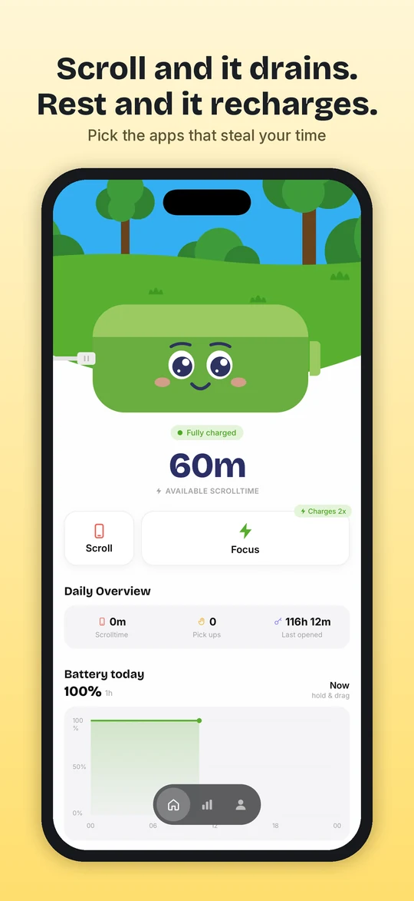

How to limit screen time on iPhone
Your iPhone already has a built-in way to cap app time, and for many people it is enough. If you keep tapping past your limits, a scroll battery can make the boundary easier to keep. Here is how to use both.
Set an App Limit with Screen Time
- Open Settings → Screen Time and turn Screen Time on if it is off.
- Tap App Limits → Add Limit, choose a category or single apps, and set a daily time.
- Optional: use Downtime to schedule hours when only the apps you allow are available.
- Optional: set a Screen Time passcode so a limit can’t be dismissed with one tap.
Where App Limits fall short
When a limit runs out, iOS lets you add one more minute or ignore the limit for the rest of the day. Without a passcode, that is one tap away. And a fixed daily cap doesn’t care whether you barely used your phone this morning.
What ScrollVolt adds
ScrollVolt is built on the same Screen Time frameworks, but it works like a battery. The apps you choose share one scroll battery that drains while you use them and recharges on its own over the day. You drag the battery to unlock exactly as many minutes as you want, so every session starts with a decision. At zero, a calm shield screen replaces the app until there is charge again. A focus session charges it twice as fast, and the Half Challenge can lower your daily limit step by step.


Frequently asked questions
Can I limit screen time on iPhone without an extra app?
Yes. App Limits and Downtime are built into iOS and free. They work well if you rarely override them.
Does ScrollVolt replace Apple’s Screen Time?
No. ScrollVolt uses Apple’s Screen Time frameworks to shield the apps you pick, so both can run side by side.
Can ScrollVolt see which apps I use?
No. Apple only gives the app anonymous tokens for your selection. Everything runs on your iPhone, with no account, tracking or ads.
Try ScrollVolt on your iPhone
ScrollVolt Premium is a yearly subscription that starts with a 3-day free trial, and you can cancel any time in your Apple Account settings. Prefer to pay once? There is also a one-time Lifetime unlock.
Download on theApp Store